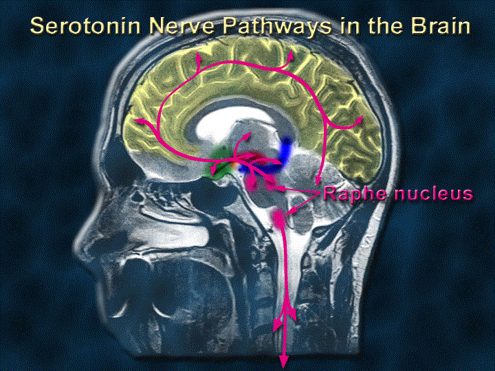

솔기핵 (Raphe Nuclei)

| # | 원문 | 한국어 | 설명 |
|---|---|---|---|
| 1 | Serotonin Nerve Pathways in the Brain | 뇌의 세로토닌 신경 경로 | |
| 2 | Raphe nucleus | 솔기핵 |
쉽게 풀면
솔기핵은 세로토닌이라는 방송을 내보내는 본사 건물이라고 생각하면 된다. 여기서 만들어진 세로토닌이 축삭을 타고 뇌 곳곳의 지사(대뇌피질, 변연계, 척수 등)로 전파되어 기분, 각성 수준, 수면-각성 주기를 폭넓게 조율한다.
왜 중요한가
세로토닌은 우울증, 불안장애, 수면장애 등 여러 정신건강 문제와 밀접하게 관련되어 있고, 대부분의 항우울제(SSRI 등)가 바로 이 세로토닌 신호를 조절하는 방식으로 작용한다. 그 세로토닌의 주된 발원지가 솔기핵이기 때문에, 정신의학·신경약리학 연구에서 항우울제의 작용기전을 규명하거나 수면-각성 조절, 통증 조절 회로를 이해하려는 논문에서 빈번하게 다뤄진다.
어디에 있고 어떻게 생겼나
- 솔기핵은 뇌줄기(중뇌에서 연수까지)의 정중선, 즉 ‘솔기’를 따라 늘어선 핵들이다. Dahlström과 Fuxe(1964)가 세로토닌을 가진 세포군을 B1~B9로 번호 붙인 것이 지금까지 쓰이는 기본 지도이다.
- 꼬리 쪽 무리(큰솔기핵 등)는 주로 연수·척수로, 머리 쪽 무리(등쪽솔기핵, 정중솔기핵 등)는 대뇌피질·변연계·시상하부 같은 전뇌로 뻗는다(Hornung, 2003).
- 뇌 안의 세로토닌 뉴런 세포체는 대부분 이 부근에 모여 있지만 투사는 뇌 전체로 퍼진다. 그래서 ‘본사 한 곳, 지사 전국’ 같은 구조가 된다.
- 솔기핵 안에는 세로토닌이 아닌 뉴런(글루탐산, GABA 등)도 섞여 있고, 일부 세로토닌 뉴런은 글루탐산을 함께 방출한다는 보고가 있다(Liu 등, 2014, 생쥐).
- 솔기핵은 전통적으로 망상체의 안쪽(정중) 부분으로 보며 뇌줄기 중심의 가장 안쪽에 솟은 세포 능선으로 나타난다. 꼬리 쪽에서 머리 쪽으로 가며 어두운솔기핵, 창백솔기핵, 큰솔기핵, 다리솔기핵, 정중솔기핵, 등쪽솔기핵, 꼬리쪽 선형핵으로 불린다. Taber 등(1960)은 세로토닌을 가시화하기 전에 선형핵 둘을 제안했는데, 이후 두 선형핵 모두 도파민 뉴런을 가지지만 세로토닌 뉴런이 있는 것은 이 중 꼬리쪽 선형핵뿐임이 밝혀졌다.
- 솔기핵의 라틴어 이름(nucleus raphe magnus 등)은 문법적으로는 소유격 raphes(‘솔기의’)가 맞다. 해부학 용어집(Terminologia Anatomica)은 nucleus raphes magnus를 쓰고, 1935년 예나 개정판 해부학 명명집은 rhaphe를 썼다.
맡은 기능
- 기분·불안과 약물: 선택적 세로토닌 재흡수 억제제(SSRI)가 세로토닌을 늘리는 시스템의 출발점이다. 솔기핵 뉴런의 5-HT1A 자가수용체가 되먹임으로 세로토닌 방출을 줄이기 때문에, 이것이 항우울 효과가 늦게 나타나는 이유의 하나라는 설명이 논의되지만 확정된 결론은 아니다.
- 수면-각성: 세로토닌 뉴런은 각성 중에 비교적 규칙적으로 느리게 발화하고, 서파수면에서 줄며, 렘수면에서는 거의 멈춘다고 보고되었다(Jacobs & Azmitia, 1992).
- 통증: 연수의 큰솔기핵에서 척수로 내려가는 경로가 통증 신호를 조절하는 하행 경로로 교과서에 실려 있다.
- 보상·동기: 생쥐 연구에서 등쪽솔기핵 뉴런이 보상과 관련된 신호를 내고(Liu 등, 2014), 소핵·투사 대상에 따라 기능이 다른 하위 체계로 나뉜다는 결과가 있다(Ren 등, 2018). 보상에 반응하는지 처벌에 반응하는지에 대한 결과는 연구 간에 일치하지 않아 아직 논쟁 중이다.
- 꼬리 쪽 핵(큰솔기핵, 창백솔기핵, 어두운솔기핵)은 척수와 뇌줄기로, 머리 쪽 핵(다리솔기핵, 정중솔기핵, 등쪽솔기핵)은 고위 기능과 관련된 뇌 영역으로 뻗는다. 등쪽솔기핵은 안와피질, 대상피질, 내측·외측 시각교차전구역, 시상하부 여러 영역에서 되먹임 입력을 받고, 등쪽솔기핵과 안와피질의 연결은 우울증과 강박장애의 예후에 영향을 준다고 여겨진다.
- 일주기 리듬: 솔기핵은 시교차상핵(SCN)과 서로 되먹임을 주고받는다. SCN은 시상하부 배내측핵을 거쳐 솔기핵에 알려 수면-각성 상태에 따라 세로토닌 수준을 바꾸고, 솔기핵은 각성과 경계 수준을 SCN에 알려 주어 적응적이면서 안정된 일주기 리듬을 만든다.
- 체온 조절: 창백솔기핵에 흥분성 아미노산을 주사하면 교감신경 활동이 크게 늘어 갈색지방 온도와 심박수가 올랐고, 이 핵이 추위에 알맞게 반응하는 데 중요하다고 시사된다.
- 솔기핵 안의 뉴런 중 세로토닌을 가진 것은 일부일 뿐 대다수는 아니다. 척수 등쪽뿔로 가는 투사는 통증을 억제하는 엔케팔린 분비를 조절한다.
연구에서 다루는 방식
- 어느 소핵인지 확인: 등쪽솔기핵과 정중솔기핵은 투사 대상과 기능이 다르므로 논문에서 “솔기핵”이라고만 쓰면 해석이 불분명해진다.
- 뉴런 식별: 세로토닌 뉴런은 파형만으로 확정하기 어려워, 광유전학적 표지(광태깅)나 면역염색으로 세포 종류를 확인하는 방식이 쓰인다.
- 측정 방법: 단일세포 기록, 섬유측광, 미세투석, 광유전학·화학유전학 조작. 사람에서는 세로토닌 수송체 PET 등을 쓰지만 작고 깊은 구조라 영상 해상도 한계가 크다.
- 세로토닌 신호는 수용체 종류(5-HT1A, 2A 등)와 투사 대상에 따라 효과가 달라, 솔기핵 활동의 증감을 곧바로 ‘세로토닌 효과의 증감’으로 읽을 수 없다.
논문에서는 이렇게 쓰입니다
실제 논문에서
이 용어를 직접 쓴 국내 논문 문장은 아직 모으지 못했다. 모이는 대로 출처와 함께 싣는다.
예시 문장
아래 예문은 용어의 쓰임을 보이려고 만든 것으로, 실제 논문 문장이 아니다.
이 문장은 수면 단계에 따라 솔기핵의 세로토닌 뉴런 활동이 달라진다는 뜻이다. 논문에서는 수면 단계별 신경핵 활성 변화나 항우울제가 작용하는 부위를 설명할 때 솔기핵을 자주 언급한다.
스트레스와 우울행동을 다루는 동물실험 연구에서 솔기핵의 변화를 우울증 모델의 신경생물학적 근거로 제시하는 사례이다.
통증 조절 회로 연구에서 솔기핵의 세로토닌 뉴런을 특정 방법으로 조작해 인과적 역할을 검증하는 방식을 보여준다.
조금 더 깊게 보면
솔기핵은 단일 구조가 아니라 등쪽솔기핵(dorsal raphe), 정중솔기핵(median raphe) 등 뇌간을 따라 나뉜 여러 소핵의 집합이며, 각 소핵마다 투사하는 뇌 영역과 기능적 역할이 다르다는 점이 최근 연구의 주요 관심사이다. 최근에는 광유전학이나 화학유전학 기법으로 특정 솔기핵 소핵의 뉴런만 선택적으로 활성화·억제하여 기분, 수면, 사회행동에 대한 인과적 역할을 검증하는 연구가 늘고 있으며, 세로토닌 외에도 일부 솔기핵 뉴런은 글루탐산이나 GABA 같은 다른 신경전달물질을 함께 방출한다는 점도 확인되고 있다.
주의할 점
솔기핵은 하나의 핵이 아니라 등쪽솔기핵, 정중솔기핵 등 여러 소핵으로 구성되어 있어 논문마다 정확히 어느 부위를 가리키는지 확인해야 한다. 솔기핵에서 뻗어나온 세로토닌 신호는 세로토닌 신경계 전체의 근원지 역할을 한다.
헷갈리기 쉬운 용어
뇌줄기의 대표적인 조절성 신경핵을 나란히 놓은 표이다.
| 용어 | 주된 신경전달물질 | 위치와 특징 |
|---|---|---|
| 솔기핵 | 세로토닌(+ 글루탐산·GABA 뉴런) | 뇌줄기 정중선을 따라 길게 분포 |
| 청반 | 노르에피네프린 | 다리뇌 위쪽 작은 핵, 각성·주의와 관련 |
| 복측 피개 영역 | 도파민 | 중뇌, 보상·동기와 관련 |
| 세로토닌 | (자체가 신경전달물질) | 솔기핵 뉴런이 내는 신호 분자이며, 핵 이름이 아님 |
참고 문헌
- Dahlström, A., & Fuxe, K. (1964). Evidence for the existence of monoamine-containing neurons in the central nervous system. I. Demonstration of monoamines in the cell bodies of brain stem neurons. Acta Physiologica Scandinavica, 62(Suppl. 232), 1–55.
- Jacobs, B. L., & Azmitia, E. C. (1992). Structure and function of the brain serotonin system. Physiological Reviews, 72(1), 165–229.
- Hornung, J.-P. (2003). The human raphe nuclei and the serotonergic system. Journal of Chemical Neuroanatomy, 26(4), 331–343.
- Liu, Z., Zhou, J., Li, Y., et al. (2014). Dorsal raphe neurons signal reward through 5-HT and glutamate. Neuron, 81(6), 1360–1374.
- Ren, J., Friedmann, D., Xiong, J., et al. (2018). Anatomically defined and functionally distinct dorsal raphe serotonin sub-systems. Cell, 175(2), 472–487.
- Wikipedia contributors. (n.d.). Raphe nuclei. In Wikipedia, The Free Encyclopedia.
표의 기준값은 위 문헌에 따른 관례이고, 분야·학술지마다 기준이 다를 수 있다.